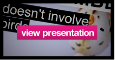

<?php
    $page = 'Who';
    require_once('header.php');
?>
<div id='main'>
	<div class='wrapper'>
		<div id='left'>
				<h1>
					The Thimbl team
				</h1>
				<h3>
					Get to know the people behind Thimbl. 
				</h3>
				<dl>
				    <dt>Dmytri Kleiner
				        <dd>
				            Dmytri is the guy who came up with Thimbl. You can find him in #telnik on Freenode</dd>
				        <dd class="smaller">> <a href="http://dmytri.info">http://dmytri.info</a></dd>
				        <dd class="smaller">> <a href="http://www.twitter.com/dmytri">@dmytri</a></dd>
				    <dt>Rico Weise
				        <dd>
				            Rico is the man behind the man. Dmytri's business parter and the guy who gets things done.
				        </dd>
				        <dd class="smaller">> <a href="http://www.humanite.tk">http://www.humanite.tk</a></dd>
				    <dt>Anthony Shull
				        <dd>
				            Anthony is responsible for a large chunk of the javascript which helps drive Thimbl and in 
				            helping to build thimbl.net
				        </dd>
				        <dd class="smaller"></dd>
				    <dt>Jonas Frankki
				        <dd>
				            Jonas is the guy who does all our design. He made the finger you see up there!
				        </dd>
				        <dd class="smaller">> <a href="http://www.jonasfrankki.com">http://www.jonasfrankki.com</a></dd>
				    <dt>Silja Nielsen
				        <dd>
				            Silja writes words, lots and lots of words. She also built the site you're looking at now.
				        </dd>
				        <dd class="smaller">> <a href="http://www.shmem.net">http://www.shmem.net</a></dd>
			        <dt>Mike Pearce
			            <dd>
			                Odd job man. Mike made the presentation and the first version of thimbl.net. He also
			                messes about with javascript when he has the time. Mike is also the blabbermouth who
			                does the blogging and maintains the thimbl twitter account.
			            </dd>
				        <dd class="smaller">> <a href="http://about.me/mikepearce">http://about.me/mikepearce</a></dd>
				        <dd class="smaller">> <a href="http://www.twitter.com/mikepearce">@mikepearce</a></dd>
				    <dt>Mark Carter
				        <dd>
				            Mark built the first thimbl client that you run on the command line, we were all really
				            surprised and happy that he did. Good stuff Mark.
				        </dd>
				        <dd class="smaller">> <a href="http://blippy.github.com/Thimbl-CLI/">http://blippy.github.com/Thimbl-CLI/</a></dd>
			</hgroup>
		
		</div>
		<div id='right' class="notgrey">
            <div id="rightaward">
                <h2> 
                Vote for Thimbl!
                </h2>
                </img>
                <p>
                We are nominated for the Transmediale/ Mozilla fondation Open Web Award!
                </p>
                <a href="award.html">Check it out!</a>

            </div>
            <p class="pinkBox"> 
                "We are not implying that some unfunded collective of activists can defeat web2.0 by just writing some nice software."
            </p> 
            <br />

            <div id="rightpresentation">
                <h2>What is Thimbl?</h2>
                <a href="presentation.html"></a>
            </div>
		</div>
		<div style="clear: both;"></div>
	</div>
</div>
<?php require_once('footer.php'); ?>
	
</body>
</html>